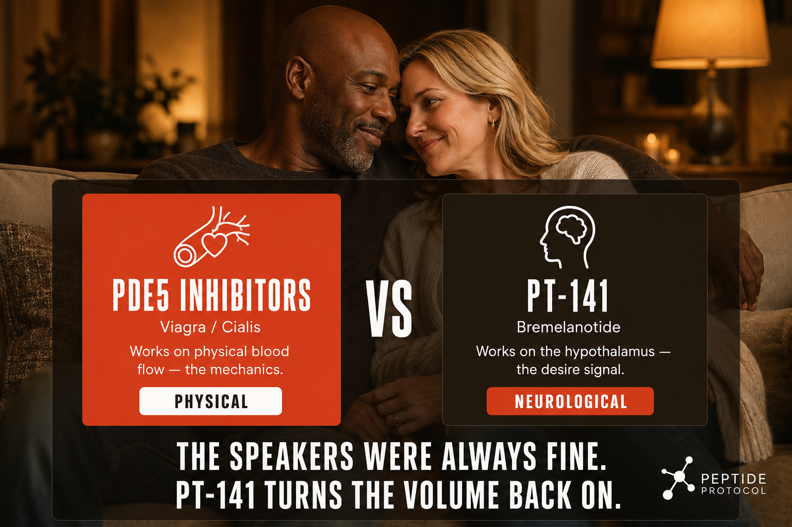

What PT-141 Is And Why It Feels Different
PT-141 (Bremelanotide) is a melanocortin peptide that works through the central nervous system rather than the vascular system. It activates melanocortin receptors (MC3R and MC4R) in the hypothalamus, the brain region responsible for regulating sexual function, appetite, and mood.
Unlike PDE5 inhibitors (Viagra, Cialis) which work by increasing blood flow to genital tissue, PT-141 works upstream, creating the neurological desire signal in the brain. This distinction is important: it addresses the want, not just the physical mechanics. It works for both men and women, making it one of the few compounds with documented benefits for female sexual dysfunction.
There is a difference between the speakers working and wanting to turn on the music. Most medications for sexual function, Viagra, Cialis, work on the speakers. They increase blood flow to the right places. The physical mechanism works better. But if you do not actually want to turn on the music in the first place, better speakers do not help much. PT-141 works on something completely different. It works on the part of your brain that decides whether you want the music on at all. Your hypothalamus, a small region deep in your brain, is responsible for regulating desire, appetite, sleep, and mood. PT-141 activates receptors in the hypothalamus that are specifically tied to sexual desire and arousal. Not the physical plumbing. The actual want. This is why PT-141 is one of the few compounds that works for both men and women. Because desire is a neurological experience that both have, not just a mechanical one. Chronic stress, exhaustion, hormonal shifts, and the general weight of being a 40-something adult with responsibilities and a to-do list can dial down that desire signal significantly, not because anything is physically wrong, but because the brain has deprioritized it. PT-141 turns the volume back up. The speakers were always fine.

How It Works
Melanocortin receptor activation in the hypothalamus triggers the brain's sexual arousal pathway. This produces both the neurological desire response and increases blood flow to relevant tissue as a downstream effect. The dual mechanism, central (brain) and peripheral (blood flow), explains why it works when other approaches do not.
Documented Benefits
- Increased sexual desire in both men and women
- Improved arousal response
- Reduced impact of stress and fatigue on sexual function
- Particularly documented for hypoactive sexual desire disorder (HSDD) in women
- No cardiovascular dependency, does not require heart-healthy sexual activity warnings that accompany PDE5 inhibitors
Dosing Protocol
| Dose | Effect | Notes |
|---|---|---|
| 0.5mg | Conservative, minimal side effects | Recommended starting dose |
| 1mg | Standard therapeutic dose | Most documented community protocol |
| 1.5-2mg | Higher end | Increased nausea risk |
How To Reconstitute PT-141
P41 (10mg vial) + 2ml BAC water
2ml BAC water
Concentration: 5mg per ml
| Your Dose | Units To Draw | Volume |
|---|---|---|
| 0.5mg (starting) | 10 units | 0.1ml |
| 1mg (standard) | 20 units | 0.2ml |
| 1.5mg (advanced) | 30 units | 0.3ml |
Dosage Build-Up Timeline
Most people start at 0.5mg to test their response to PT-141, particularly for nausea tolerance. Increase only after confirming the lower dose is comfortable.
Common Mistakes
begin at 0.5mg to test for nausea response
PT-141 works through neurological pathways which are more gradual (45-60 minutes)
this is a situational compound. Frequent use reduces effect and increases side effects
avoid combining without medical guidance
particularly in the first few uses and at higher doses. Usually resolves within 1-2 hours. Taking it on an empty stomach increases nausea risk, have a light snack beforehand
temporary warmth and redness, particularly at higher doses
usually mild
Contraindications And Cautions
consult physician before use
PT-141 can temporarily increase blood pressure
Pregnancy
increased cardiovascular risk
What To Track
- Nausea response at starting dose
- Timing from injection to onset
- Overall response and appropriate dose for your physiology